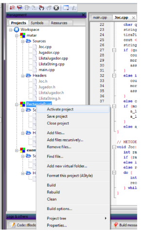

ENTORNS DE PROGRAMACIÓ
Ús del Code::Blocks
Creació d'un nou projecte
L'ús del Code::Blocks és senzill, sempre hi quan s'hagin seguit el passos de la instal·lació. El primer que cal fer és crear un nou projecte:
- Tenim dues opcions:
- 1. Des de la pantalla d'inici poden fer click a Create new project.
- 2. Anar a la barra superior i: File -> New Project.
- Escollir el tipus de projecte, nosaltres sempre utilitzarem la opció Console Application.
- Ens demanarà si volem fer un projecte de C o C++. Nosaltres usem C++.
- Seguidament haurem de donar un nom al nostra projecte.
- Finalment haurem d'escollir el compilador. Si la instal·lació ha estat correcte, aleshores podrem escollir el GNU GCC Compiler. Tota la resta de paràmetres els deixarem per defecte.
Compil·lació i executació
Un cop tenim el projecte creat, per defecte ens crearà el main.cpp, que és el fitxer on treballarem. El primer que cal fer és compilar-lo per així assegurar que l'opció del compilador està ben configurat. Per fer-ho tenim dues opcions:
- A les barres superior trobarem l'icona d'un engrenatge:

- A la barra superior a l'apartat de build, i la primera opció del desplegable Compile.
Es possible que ens surti un error dient que no ha trobat el compilador, per solucionar això (No es pot solucionar si no hem seguit correctament la instal·lació del Code::Blocks i en crear el projecte no ens ha detectat el compilador) hem d'anar a: Settings->Compiler->(pestanya)ToolChain Executables-> Escollir el compilador(GNU GCC Compiler) i Autodetect -> OK.
Amb aquest procés podem solucionar el problema del compilador.
Un cop tenim el projecte compil·lat, aleshores ja el podem executar, per fer-ho només cal prémer el botó de play que trobem al costat de la roda de compil·lar. O bé, anar a la pestanya Build -> Run.
Observarem que se'ns obra un terminal amb el resultat de l'execució. En aquest terminal podem escriure per teclat si es requereix entrar dades.
Multiples Projectes
El Code::Blocks pot tenir diferents projectes oberts al mateix temps, però només un pot estar actiu. Per escollir quin és l'actiu, a la secció de projectes (Finestra a l'esquerra de tot), veurem que n'hi ha un amb negreta. Aquest és el que està actiu. Si volem activar un altre, només cal fer click dret sobre el projecte escollit i Activate Project. 
Cal tenir pesent que només es compil·la i s'executa el projecte actiu.
Programes No acabats
A vegades fem errors programant i hem executat un programa que no acaba mai. Code::Blocks ens dóna una eina per poder atutar la execució, i és tancant la finestra de terminal que ens ha generat el compilador. També funciona utilitzar Control + C.
Ajuts amb IDE
De moment només hem fet una ullada a les prestacions més bàsiques del nostra entorn de treball. Hi ha moltes més coses que permet fer però que no tractarem aquí. Recomanem per tots aquells que estiguin interesats en aprendre més a fer una ullada al manual de l'usuari.
També us deixem a la vostra disposició tot un conjunt d' accesos ràpids del programa.